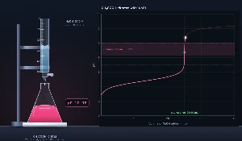
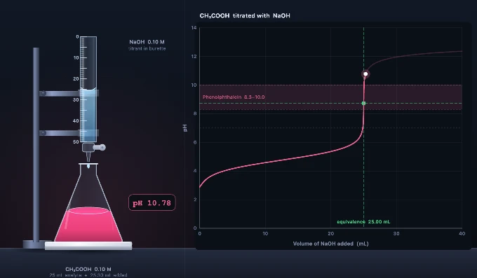

Titration Simulator — Acid-Base Curve, Indicators & Calculator
Burette, live pH curve and indicator colour change — strong & weak acids, 6 indicators
📊 Results Table record your titres and average the concordant ones
| Run | Initial / mL | Final / mL | Titre / mL |
|---|
ƒ Live Equations values substituted from the current setup
ƒ Working every step, with units
Click “New Problem” to begin.
Click “Start Quiz” to begin a 5-question round.
1 Overview
A note on units: concentrations are labelled M in the compact controls and written as mol dm⁻³ in the worked equations. They are the same unit — 1 M = 1 mol dm⁻³ = 1 mol L⁻¹. Volumes are in mL throughout and converted to litres inside every calculation.
This simulator performs a complete acid–base titration. You choose what sits in the conical flask (the analyte), what sits in the burette (the titrant), their concentrations, the analyte volume and the indicator. As titrant is delivered, the flask colour changes according to the real transition range of the chosen indicator and the pH curve is plotted live beside the apparatus.
The pH is not interpolated from a stored curve. At every volume the simulator solves the full charge-balance equation of the mixture numerically, so buffer regions, dilution, weak-acid and weak-base behaviour and diprotic systems all emerge from the chemistry rather than being hard-coded. Four modes are available: Simulate, Explore, Practice and Quiz.
2 Setting Up the Titration

The two setup bars sit directly below the apparatus so the bench is the first thing you see, and they mirror a real one:
- In the flask — pick the analyte, then set its concentration (0.01–1.00 M) and volume (5–50 mL). This is the solution being analysed.
- In the burette — pick the titrant and its concentration. The titrant list filters automatically: choose an acid analyte and you are offered bases, and vice versa.
- Indicator — choose from six indicators, or select None to see the uncoloured solution and rely on the curve alone.
Each quantity has a slider for quick exploration and a numeric box for exact values. Type a decimal straight into the box — a standardised solution of 0.1035 M, or a pipetted 23.75 mL aliquot, is entered exactly as written and is used at full precision in every calculation. The − and + buttons nudge by 0.01 M or 1 mL without losing the digits you typed, and the arrow keys do the same (hold Shift for a ten-fold step). Out-of-range entries are clamped to the slider limits.
Changing any setup control resets the burette to zero and clears the curve, exactly as refilling the burette would.
3 Running a Titration (Simulate Mode)
The control bar along the bottom of the canvas delivers titrant:
- Drop — delivers a single 0.05 mL drop. Use this near the end point, where one drop can swing the pH by several units.
- +1 mL — delivers 1.00 mL at once, for covering ground early in the titration.
- Hold either button instead of tapping repeatedly — the tap stays open and the flow speeds up the longer you hold, exactly like easing a real stopcock. Release, or slide your finger off the button, to close it instantly.
- Run — opens the stopcock and delivers continuously, slowing as the curve steepens, and closes the tap by itself at the colour change with a small random overshoot for reaction time. That makes it a genuine rough titration: near the right answer, but never the same twice. If the indicator never reaches its transition range, Run stops at the burette limit instead. Press again to pause early.
- Record titre — adds the current run to the Results Table below the canvas and refills the burette for the next run.
- Report — builds a printable A4 test report from your recorded titres and opens it for your browser’s Save-as-PDF. The same button also sits at the bottom of the Results Table. It stays greyed out until you have actually run something — either titrant delivered or at least one titre recorded — because there is nothing to certify before that.
- Reset — empties the flask, refills the burette and clears the plotted curve.
- Calculations — opens a step-by-step working of the current state, with the mole arithmetic set out in full.
A real titration takes dozens of drops near the end point, so hold rather than tap: press +1 mL to run quickly to within a millilitre of the expected titre, then hold Drop and watch for the first permanent colour change.
Right-clicking the canvas offers Export PNG, Export CSV (the full volume–pH dataset) and Reset.
4 Reading the Display Panel
The Display panel at the top-right of the canvas toggles graph layers and bench equipment. It starts collapsed so it never covers the curve — click the eye to open it.
- Grid — graph gridlines.
- Equivalence — a vertical marker at the calculated equivalence volume and a horizontal marker at the pH there.
- Indicator band — shades the pH range over which the chosen indicator changes colour. This is the single most useful layer: if the band crosses the steep section, the indicator is suitable.
- dpH/dV — overlays the first derivative. Its peak sits at the equivalence point, which is how the point is located when no indicator is used.
- Half-equiv. — marks the half-equivalence volume. For a weak acid the pH there equals the pKa, which is how pKa is measured experimentally.
- Labels — axis numbers and point annotations.
- Stirrer — swaps the white tile for a magnetic stirrer plate and stir bar. Off by default: the standard school method is to swirl the conical flask by hand over a white tile, which is why the flask is conical and why the tile is there. Magnetic stirring is the norm in potentiometric and automated titrations, where both hands are needed and the mixing rate must be reproducible.
- Sound — mutes the drip and end-point tones.
5 Burette Readings & the Results Table
A real burette is filled to near zero, not exactly zero, so every run starts from a different initial reading and the titre is a subtraction: titre = final reading − initial reading. Both are recorded to two decimal places, the second decimal being an estimate between the 0.1 mL graduations.
Press Record titre on the canvas to add the current run to the Results Table. The table applies the standard rules automatically: the first run is marked rough and never averaged; runs agreeing within 0.10 mL are marked concordant; anything outside that cluster is marked discard. The mean is taken over the concordant set only.
Each reading carries an uncertainty of ±0.05 mL, and because a titre is the difference of two readings the absolute uncertainty on the titre is ±0.10 mL. The table converts that to a percentage, which is why titres are designed to land in the 20–30 mL range — the same ±0.10 mL is 0.4% of 25 mL but 2% of 5 mL.
6 Unknown Sample — the Real Experiment
A titration exists to measure something you do not know. With the concentration sitting on a slider the exercise is circular, so the Unknown sample button beside the indicator selector hides it.
Set everything up first — analyte, titrant, its concentration, your aliquot volume — then switch Unknown on. Sealing the sample locks all of those, because changing any of them would invalidate the concealed concentration and push the titre outside the burette. The indicator stays free to choose, since it cannot affect the sample. A banner under the reagent bar explains the locked state while it is active.
Switching it on picks a concealed concentration that gives a sensible 15–40 mL titre, locks the setup, and blanks every readout derived from it — equivalence volume, equivalence pH, indicator end point and titration error all show ?, and the equivalence markers disappear from the curve. What remains is exactly what an experimenter can observe: the burette reading, the titre and the colour change.
While a sample is sealed the Results Table moves directly beneath the canvas, so you can record a titre, check concordance and enter your answer without scrolling past setup controls you can no longer change. It returns to its usual place below the readouts when you unseal.
Work as you would at the bench: run a rough titration, then repeat until three titres agree within 0.10 mL. Once the Results Table has a concordant set, an answer box appears. Compute the concentration from the mean titre and enter it. Your answer is graded against the true value: within 1% is the precision a careful titration delivers, within 5% suggests a slip in the mean or the mole ratio, and anything larger usually means the mole ratio was wrong or millilitres were never converted to litres.
7 Calculate Mode
Four solvers, each showing full working with units: Unknown concentration from a titre, Titre required to plan a titration, Percentage purity of an impure solid, and Back titration for samples that are insoluble or slow to react.
Set the mole ratio from your balanced equation — 1:1 for HCl and NaOH, 1:2 for H₂SO₄ against NaOH or Na₂CO₃ against HCl. Getting this ratio wrong is the single most common error in titration calculations. Back titration needs two ratios: sample to excess reagent, and excess reagent to back-titrant, and the second box appears only in that mode.
8 Readouts and Titration Error
Six cards sit under the canvas. Volume added and pH track the current state. Equivalence at and pH at equivalence are calculated from the setup and do not depend on how far you have titrated.
Indicator end point is the volume at which the chosen indicator reaches the midpoint of its colour change — what you would actually record. Titration error is the percentage difference between that end point and the true equivalence volume, colour-coded green below 0.5%, amber below 2% and red above. This is the quantitative version of “is this the right indicator?”
All four of these show — until you have delivered some titrant, and the equivalence markers and the ghosted future curve stay off the graph until then. Otherwise the equivalence volume is sitting on screen before you start, and the exercise becomes “titrate to 25 mL” rather than “watch for the colour change”. Reset clears them again.
9 Explore Mode
Five categories of concept cards: Basics (what a titration is, apparatus, the four curve types), Curves (shape, steep section, buffer region, half-equivalence), Indicators (transition ranges, why phenolphthalein suits weak acids, the double end point of carbonate), Calculations (mole ratios, back-titration, the Henderson–Hasselbalch equation) and Technique & Errors (rinsing, parallax, the rough-then-accurate method, concordant titres). Every card with a formula carries a worked example.
10 Practice & Quiz Modes
Practice mode generates randomised problems across eight types: unknown concentration, equivalence volume, pH at a stated volume, pKa from half-equivalence, indicator selection, mole ratio, percentage purity and titre calculation. Answer by typing a number or picking an option, then click Check. Show Solution lays out the full working.
Quiz mode presents 5 randomly drawn multiple-choice questions. After the fifth you get a score, a 1–5 star rating and a per-question breakdown with explanations.
11 Exporting a Test Report
Report on the canvas dock, or Export Test Report at the foot of the Results Table, builds a printable A4 certificate and opens it for your browser’s Save-as-PDF (Ctrl/Cmd + P). Both buttons stay greyed until you have actually run something.
The report carries six sections: method and reagents with strengths and pKa values; every burette reading with its run tagged rough, concordant or discarded; the results, including mean titre, absolute and percentage uncertainty and the calculated concentration; the mole working set out line by line; the titration curve redrawn on a light background so it prints legibly; and an indicator assessment graded against the 0.5% limit, with the model’s assumptions and a signature block.
If no titres are recorded it falls back to the run currently on the bench. In unknown-sample mode it deliberately omits the equivalence markers and the nominal concentration, so exporting cannot leak the answer.
12 Tips & Common Exam Traps
- The equivalence point of a weak acid + strong base titration is not pH 7 — it is basic, because the salt formed hydrolyses. Set up ethanoic acid against NaOH and read the value.
- Likewise a weak base + strong acid equivalence point is acidic. Only strong + strong gives exactly 7.
- At the half-equivalence point of a weak acid, pH = pKa. Turn on the Half-equiv. layer and check it against the reagent's quoted pKa.
- A weak acid titrated with a weak base has no steep section worth the name — no indicator works, which is why it is never done in practice. Try ethanoic acid against ammonia to see why.
- Diluting both solutions equally does not move the equivalence volume, but it does flatten the steep section and shrink the range of usable indicators.
- Sodium carbonate against HCl gives two end points — phenolphthalein catches the first, methyl orange the second, and the second volume is double the first.
- Use Drop rather than +1 mL within a millilitre of the end point. Overshooting is the single most common practical error.
- On a diprotic analyte the indicator decides which end point you find. Sodium carbonate against HCl gives about 23.5 mL with phenolphthalein but about 50 mL with methyl orange — roughly double. Titres differing by a factor of two across runs almost always mean the indicator, not the technique.
Acid-Base Titration: Curves, Indicators and Calculations

A titration finds an unknown concentration by reacting it with a solution of known concentration until the reaction is exactly complete. This simulator runs that experiment: fill the burette, choose an indicator, open the stopcock and watch both the flask colour and the pH curve respond. The pH at every point is obtained by solving the charge-balance equation of the mixture, so weak-acid buffer plateaus, hydrolysed equivalence points and diprotic double end points all appear on their own.
What are the four types of acid-base titration curve?
| Titration | Example | pH at equivalence | Suitable indicator |
|---|---|---|---|
| Strong acid + strong base | HCl + NaOH | 7.0 | Any — methyl orange, phenolphthalein or bromothymol blue |
| Weak acid + strong base | CH₃COOH + NaOH | ≈ 8.7 | Phenolphthalein |
| Strong acid + weak base | HCl + NH₃ | ≈ 5.3 | Methyl orange or methyl red |
| Weak acid + weak base | CH₃COOH + NH₃ | ≈ 7.0 | None — no steep section to detect |
Acid-base indicator transition ranges
| Indicator | pH range | pKIn | Acid colour | Base colour | Best used for |
|---|---|---|---|---|---|
| Methyl orange | 3.1 – 4.4 | 3.47 | Red | Yellow | Strong acid + weak base |
| Methyl red | 4.4 – 6.2 | 5.05 | Red | Yellow | Strong acid + weak base |
| Bromothymol blue | 6.0 – 7.6 | 7.10 | Yellow | Blue | Strong acid + strong base |
| Phenol red | 6.8 – 8.4 | 7.90 | Yellow | Red | Strong acid + strong base |
| Phenolphthalein | 8.3 – 10.0 | 9.40 | Colourless | Pink | Weak acid + strong base |
| Thymolphthalein | 9.3 – 10.5 | 9.90 | Colourless | Blue | Weak acid + strong base |
An indicator is itself a weak acid, so it changes colour over roughly pKIn ± 1 — the range over which the ratio of its two coloured forms passes from about 1:9 to 9:1. This simulator tints the flask from that equilibrium directly, fraction = 1/(1 + 10pKIn−pH), so at the foot of the quoted range the solution already carries a faint tinge rather than snapping from one colour to the other. Phenolphthalein and thymolphthalein also fade back towards colourless above about pH 12.5, as they do in reality when strong alkali converts them to the carbinol form. Select any of these in the simulator and the shaded band on the curve shows exactly where it would change, together with the resulting titration error as a percentage.
Why is the equivalence point not always pH 7?
Only a strong acid neutralised by a strong base gives a neutral salt. When a weak acid such as ethanoic acid is neutralised by sodium hydroxide, the product is sodium ethanoate, and the ethanoate ion is a base — it takes a proton back from water and releases hydroxide, pushing the pH above 7. The mirror case applies to a weak base neutralised by a strong acid: the ammonium ion formed is a weak acid, so the equivalence point falls below 7. The weaker the acid or base, the further the equivalence point is displaced from neutral.
How do you choose the right indicator for a titration?
An indicator is itself a weak acid whose protonated and deprotonated forms differ in colour, and it changes over roughly pKIn ± 1. The rule is that this transition range must lie inside the steep, near-vertical section of the curve. Because that steep section spans several pH units in a fraction of a drop, any indicator changing colour within it flags the equivalence point to within a few tenths of a percent. For 0.100 M hydrochloric acid against 0.100 M sodium hydroxide the simulator gives errors of −0.68% for methyl orange, −0.02% for methyl red, 0.00% for bromothymol blue and phenol red, +0.05% for phenolphthalein and +0.16% for thymolphthalein. Only methyl orange, whose pKIn of 3.47 sits near the foot of the steep section, drifts past the 0.5% normally accepted for volumetric analysis. Phenolphthalein (8.3–10.0) suits weak acid against strong base; methyl orange (3.1–4.4) suits strong acid against weak base; both work for strong against strong. Turn on the indicator band layer in the simulator and the judgement becomes visual.
What is the half-equivalence point and why does it matter?
At half the equivalence volume, exactly half the weak acid has been converted to its conjugate base, so their concentrations are equal. Substituting into the Henderson–Hasselbalch equation, pH = pKa + log([A⁻]/[HA]), the logarithm term becomes log(1) = 0 and the pH equals the pKa. That equality is exact within the ideal-solution model used here and in every textbook derivation — a real measurement is displaced slightly because activities, not concentrations, govern the equilibrium. This is the standard laboratory method for measuring the pKa of an unknown weak acid: titrate it, read the pH at half the titre, and that number is the pKa. The half-equivalence point also sits at the centre of the buffer region, where the curve is flattest and the solution resists pH change most strongly.
How do you calculate an unknown concentration from a titre?
Convert the titre to moles of titrant with n = c × V (volume in litres), apply the mole ratio from the balanced equation, then divide by the analyte volume. For HCl against NaOH the ratio is 1:1, so caVa = cbVb. For sulfuric acid against sodium hydroxide two moles of base react with one of acid, so the base moles must be halved first. The Calculations button in the simulator prints this working for whatever setup is currently loaded, which makes it easy to check your own arithmetic against a worked case.
How do you record and average concordant titres?
A single titre proves nothing about precision, so the simulator keeps a results table rather than a single number. Press Record titre after each run and it logs the initial burette reading, the final reading and the difference between them — the burette starts at a different near-zero value every run, so the titre is always a genuine subtraction rather than a number read straight off the scale.
The first run is tagged rough and never averaged. Of the rest, the largest group agreeing within 0.10 mL is marked concordant and everything outside it is discarded, so a single overshoot cannot drag the mean. Because a titre is the difference of two readings each uncertain by ±0.05 mL, the absolute uncertainty is ±0.10 mL, which the table converts to a percentage. That is why titres are designed to land in the 20–30 mL range: the same ±0.10 mL is 0.4% of 25 mL but 2% of 5 mL.
Can you determine an unknown concentration?
Yes — Unknown sample conceals the analyte concentration and every readout derived from it, then locks the setup so the sealed sample stays valid. The equivalence markers disappear from the curve, leaving only what an experimenter can observe: the burette reading, the titre and the indicator colour. Titrate, record concordant titres, then enter the concentration you calculate from
ca = (ct × Vt / Va) × zt/za
Your answer is graded against the true value: within 1% is the precision a careful titration delivers, within 5% suggests a slip in the mean or the mole ratio, and anything larger usually means the ratio was wrong or millilitres were never converted to litres. The Calculate tab solves the same arithmetic in four forms — unknown concentration, required titre, percentage purity and back titration, which needs two mole ratios because the leftover excess is measured with a different reagent from the one the sample consumed. Any run can be exported as a printable test report with the readings, working, curve and an indicator assessment.
How is the pH on this curve calculated?
Many online titration curve tools apply the Henderson–Hasselbalch equation piecewise, and several state plainly that they handle monoprotic acids only. That approximation breaks down exactly where it matters — within a fraction of a millilitre of the equivalence point, and at the start of a very dilute or very weak titration. This simulator instead solves the complete charge-balance equation of the mixture at every volume:
[H⁺] − Kw/[H⁺] + Σ Fi(zi − n̄i) = 0
Because that expression increases monotonically with [H⁺], the root is unique and is found by bisection to well below display precision. Buffer plateaus, hydrolysed equivalence points, dilution effects and the two separate end points of a diprotic system all emerge from the chemistry rather than being written in by hand. It reproduces the standard textbook values: 0.100 M ethanoic acid at pH 2.88, its equivalence point with sodium hydroxide at pH 8.73, and the half-equivalence pH equal to the pKa of 4.76 exactly.
Who uses a titration simulator?
This virtual lab is built for GCSE, A-level, IB and AP chemistry students preparing for practical assessments, for vocational and technical students in analytical chemistry units, and for teachers who need a projectable titration that can be run, reset and re-run in seconds. It lets learners overshoot the end point, choose the wrong indicator and dilute the analyte to nothing — all the instructive mistakes that a real bench makes expensive — and see the consequence on the curve immediately.
Explore Related Simulators
If you found this titration simulator helpful, explore our Litmus Paper Test Virtual Lab, Acids & Bases Mixing Simulator, Chemical Equation Balancer, and Build Your Atom Simulator, and the Refraction of Light Simulator for more hands-on practical science.